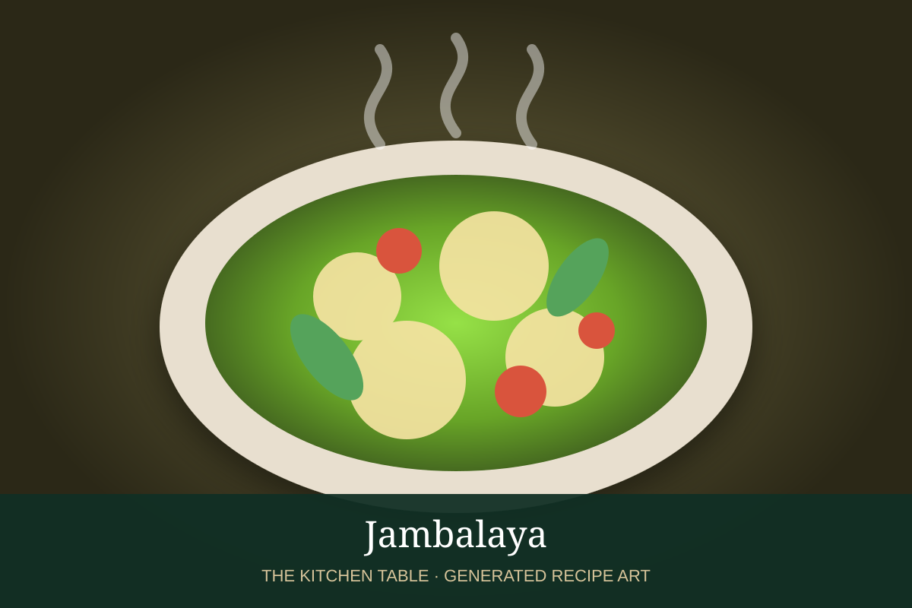

← Back to all recipes
RICE · CAJUN / CREOLE
Jambalaya
A one-pot Louisiana rice dish with chicken, andouille, shrimp, the holy trinity, tomatoes, and bold Creole seasoning.
1 hrServes 6

Photo: Wikimedia Commons
Ingredients
- 1 lb boneless chicken thighs, diced
- 12 oz andouille sausage, sliced
- 1 lb large shrimp, peeled and deveined
- 2 tbsp neutral oil
- 1 onion, diced
- 1 green bell pepper, diced
- 3 celery ribs, diced
- 3 garlic cloves, minced
- 1 can (14 oz) diced tomatoes
- 1 1/2 cups long-grain rice
- 3 cups chicken stock
- 1 tbsp Creole seasoning
- 1 tsp dried thyme
- 2 bay leaves
- Salt and black pepper
- Scallions and parsley, for serving
Preparation
- Brown the chicken and andouille in oil in a heavy pot. Transfer to a plate.
- Cook onion, bell pepper, and celery until softened; stir in garlic.
- Add tomatoes, rice, stock, Creole seasoning, thyme, bay leaves, chicken, and sausage. Bring to a simmer.
- Cover and cook over low heat until the rice is nearly tender, about 20 minutes.
- Fold in the shrimp, cover, and cook 5 to 7 minutes more until the shrimp are just done and the rice is tender.
- Rest 5 minutes, fluff gently, and garnish with scallions and parsley.